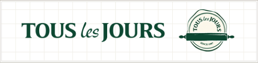
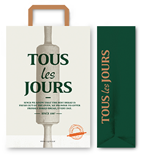
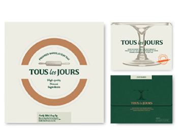
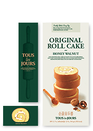

브랜드 스토리
갓 구운 빵을 위한 뚜레쥬르의 하루
16년 10월 뚜레쥬르가 신선함이 가득한 베이커리로 태어났습니다.
컨셉과 패키지 디자인은 물론 매장 인테리어까지 모두 새로워졌습니다.
새로운 뚜레쥬르 브랜드 컬러
-
- 매일매일
- #005533
Everyday
Green‘매일매일’은
자연 그대로의
신선함을 상징합니다. -
- 정겨운 불빛
- #EE6622
Loving
Orange‘정겨운 불빛’은
건강하고 맛있는
생동감을 상징합니다. -
- 성실
- #EEEEDD
Fresh White‘성실’은
빵을 바라보는
순수함을 상징합니다. -
- 따듯한 카페라떼
- #BB9977
Mild Beige‘따듯한 카페라떼’는
맛과 향의
풍부함을 상징합니다.
새로운 뚜레쥬르 로고와 엠블럼
새로워진 뚜레쥬르를 나타내는 엠블럼은 매일매일 “새로운 반죽을 밀어 신선한 맛과 향을 퍼뜨린다”는 의미로 신선한 반죽을 밀대로 미는 모습을 표현하였습니다.
새로운 뚜레쥬르 패키지
-  종이봉투
-  케익박스
-  롤케익박스
뚜레쥬르의 새로운 컨셉과 브랜드 컬러를 담아 더욱 프리미엄해진 새로운 패키지를 만나보세요. 새로워진 컨셉과 브랜드 컬러를 반영하여 더욱 선명하고 편리해진 뚜레쥬르 매장을 만나보세요.
지금부터 신선함이 가득한 베이커리 뚜레쥬르를 만나보세요.
갓 구워져 나온 빵이 가장 맛있다는 것을 알기에
이른 새벽부터 늦은 밤까지 매순간 노력하는 뚜레쥬르의 하루를 보여 드립니다.
-
아침 5시
- 신선한 빵을 위한 하루를 시작하다
- 갓 구운 빵을 위한 뚜레쥬르의 하루는 모두가 잠들어 있는
깜깜한 새벽을 깨우며 분주하게 시작됩니다.
-
아침 6시
- 매일 새벽 배달되는 신선한 반죽
- 매일 신선하게 만들어진 반죽은 깨끗한 배송 시스템을 통해
매일 새벽 전국 매장으로 배송 됩니다.
-
아침 6시 30분
- 신선한 반죽을 준비하다
-
매일 아침 새롭게 받은 신선한 반죽을 정성스럽게
반죽하여 오븐에 넣을 준비를 합니다.
-
아침 7시
- 신선하게 빵을 굽다
-
정성스레 준비된 신선한 반죽을 오븐에 넣어 따뜻한
김이 모락모락 피어 오르는 갓 구운 빵으로 구워 냅니다.
-
아침 8시
- 갓 구운 빵의 신선함으로 매장을 채우다
-
오븐에서 갓 구워낸 따뜻한 빵의 신선함으로
매장을 가득 채웁니다.
갓 구운 빵을 언제라도 만나보실 수 있도록 뚜레쥬르는
이른 아침부터 저녁까지 하루종일 끊임없이 빵을 구워냅니다.
-
저녁 6시
- 또 다른 내일을 위한 준비
-
내일도 소중한 당신께 신선하게 갓 구운 빵을 드리기 위해
새로운 반죽을 발효기에 넣고 내일을 기다립니다.
-
저녁 11시
- 분주한 하루를 마무리하며 내일을 준비하다
-
숨 가쁘게 달려온 하루를 마무리하며,
늘 좋은 재로로 만들어 건강하고, 매장에서 갓 구워
신선한 빵을 만날 수 있는 뚜레쥬르가 될 것을 다짐합니다.